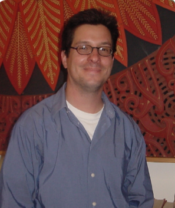

New Faculty
MATTHEW BASSO | Matt Basso, jointly appointed in History and Gender Studies, comes to the University of Utah from the University of Richmond where he was an Assistant Professor of History and American Studies specializing in 20th century political, social, and cultural history. He received his Ph.D. from the University of Minnesota’s Program in American Studies in 2001, his MA in history from the University of Montana in 1996, and taught in various roles at both those universities as well as in the

U.S. Army while serving in Germany during the Gulf War. He retired as a Captain in 1994. Prior to his stint in uniform he spent four glorious years at Vassar College where his keen interest in gendered relations of power was born. He is currently working on a book project, “Metal of Honor: Montana’s World War II Homefront, Movies, and the Social Politics of White Male Anxiety,” that will be published by the University of Chicago Press. The instrumental wartime role of masculinity, whiteness, religion, and working class subjectivity, and the place of cultural artifacts in the process of deaning exclusionary (and inclusionary) social and political practices, forms the core of the study. He is also the co-editor of Across the Great Divide: Cultures of Manhood in the U.S. West, (New York: Routledge, 2001), and is editing a lost Federal Writers’ Project Manuscript from the 1930s. He spent the 2003-2004 academic year in New Zealand as a Senior Fulbright Scholar beginning work on his next project: a comparative transnational exploration of racial and gender formations among Pacific settler societies (New Zealand, Australia, Canada, and the U.S.).